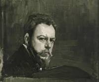
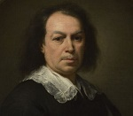
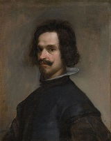
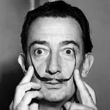

 
Cercedilla, 10 de agosto de 1923)
Sus obras más representativas están pintadas al aire libre y domina con maestría la luz para cuadros en los que representan escenas cotidianas y paisajísticas de la vida mediterránea. Además también cultivó la pintura de denuncia social que le reportó muchoso éxitos. La fama internacional le llega tras celebrar una exposición en París con más de medio millar de obras, haciendo que se conozca su obra pictórica por toda Europa y América.
Expuso su obra en Nueva York en 1909 y cosechó un éxito sin precedente alguno. Firmó un encargo para la Hispanic Society of America realizando catorce murales que decorarían las salas de la institución: se conocen como Visión de España, y en los que se representaban escenas características de diversas provincias tanto españolas como portuguesas. Otra importante faceta suya fue la de retratista de figuras importantes como fueron Juan Ramón Jiménez, el rey Alfonso XIII, Vicente Blasco Ibáñez y Ortega y Gasset entre otros.

En 1630 trabajaba ya como pintor independiente en Sevilla y en 1645 recibe su primer encargo importante, una serie de lienzos destinados al claustro de San Francisco el Grande; la serie se compone de trece cuadros, que incluyen La cocina de los ángeles, la obra más celebrada del conjunto por la minuciosidad y el realismo con que están tratados los objetos cotidianos.

Pasó sus primeros años en Sevilla, donde desarrolló un estilo naturalista de iluminación tenebrista, por influencia de Caravaggio y sus seguidores. A los 24 años se trasladó a Madrid, donde fue nombrado pintor del rey Felipe IV y cuatro años después fue ascendido a pintor de cámara, el cargo más importante entre los pintores de la corte. A esta labor dedicó el resto de su vida. Su trabajo consistía en pintar retratos del rey y de su familia, así como otros cuadros destinados a decorar las mansiones reales. Su presencia en la corte le permitió estudiar la colección real de pintura que, junto con las enseñanzas de su primer viaje a Italia, donde conoció tanto la pintura antigua como la que se hacía en su tiempo, fueron influencias determinantes para evolucionar a un estilo de gran luminosidad, con pinceladas rápidas y sueltas.
En su madurez, a partir de 1631, pintó de esta forma grandes obras como La rendición de Breda. En su última década su estilo se hizo más esquemático y abocetado, alcanzando un dominio extraordinario de la luz. Este periodo se inauguró con el Retrato del papa Inocencio X, pintado en su segundo viaje a Italia, y a él pertenecen sus dos últimas obras maestras: Las Meninas y Las hilanderas. Autor: Mayte Olmedilla UT2.-Lenguaje de Marcas e-learning Fecha: Noviembre 2015

Francia, 28 de enero de 1928)
Entre sus obras más famosas tenemos